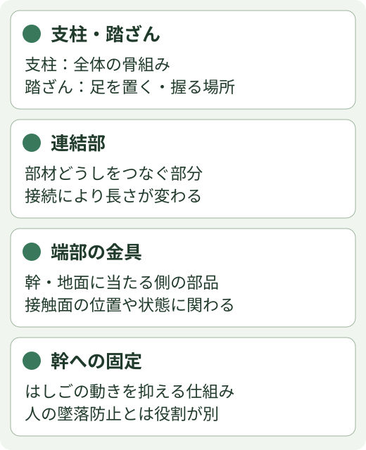
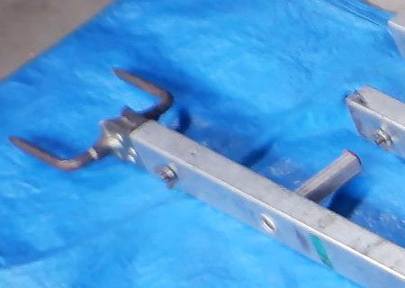
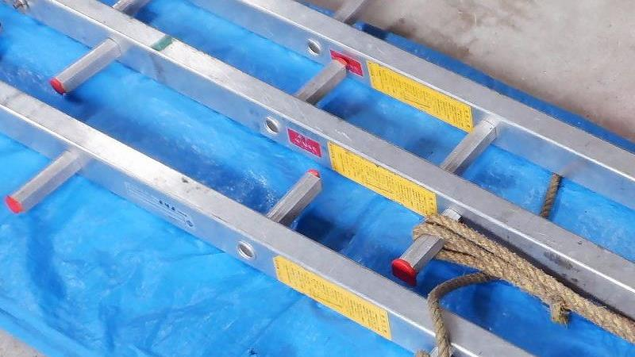
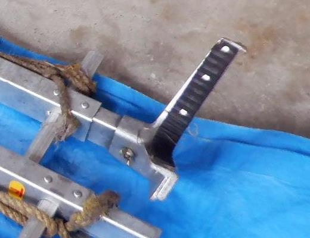
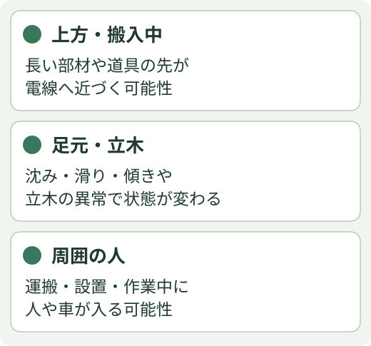

継ぎ足し式はしご：同系統の基礎
まず、このはしごを見分ける
写真07は、角形の一本支柱に踏ざんが交互に付く、立木用の継ぎ足し式・枝打ちはしごの系統と考えられます。ナカオ旧NE系列が外形上の第一候補ですが、メーカー・型式は未確定です。
会社では幹へロープで固定するという聞取りがあります。写真は保管状態で、使用時の固定位置やロープの通し方までは示していません。

同系統で共通する、各部の役割

部材をつなぐことで長さを変える構造です。ただし、好きな本数を足せるわけではありません。幹への固定ができても、人の姿勢保持・墜落防止まで兼ねるとは判断しません。
写真のどこを見るか

支柱との取付け、変形、欠け、緩みを見る場所です。写真だけで健全性を判定しません。

曲がり・ねじれ・亀裂、踏ざんのがたつき、端部の欠落、読めないラベルを確認します。丸穴の用途や適合する留め具は型式資料で照合します。

当たり面の欠落・傷み、金具の変形・取付部、ロープの擦れ・切れ・つぶれなどを見る場所です。見えているロープがメーカー指定品かは未確認です。
異常や部品の欠落を見つけたら、その状態で使用を進めず担当者へ伝えます。自己判断で穴を広げる・曲がりを戻す・別製品の部品を付ける補修は、この基礎編では扱いません。
設置場所の周りを、なぜ見るのか

電線は、部材を持ち上げるとき・運ぶときも含めて確認します。高電圧の電線では、直接触れなくても感電する危険があります。外見だけで電圧や必要な離隔を判断せず、現場の計画と担当者の確認に従います。
足元の沈みや滑りは、はしごの姿勢を変えます。立木の状態や接触する場所も支え方に関わります。人や車が入る場所では、長い部材との接触や作業中の干渉を考え、現場全体の方法を確認します。
機種と作業方式の確認が必要な部分
連結具の種類と組付け・締付け、継足せる本数・長さ、使用角度・荷重、幹への固定位置・ロープの仕様と結び方、昇降・樹上への乗移りは、この実物に対応する取説と現場方式の確認が必要です。
一般の立掛けはしごの数値や、別系列のチェーン固定・ボルト連結を、会社のはしごの手順として流用しません。ロープ結びの教材も、そのまま固定方法の指定にはなりません。
出典と確認の範囲
会社写真07と社内聞取り（2026年10月）。写真の現在の状態は点検結果や使用可否を保証するものではありません。
ナカオ：NE系列の生産終了告知。候補系列の存在確認。実物同定の確定資料ではありません。
長谷川工業：枝打ちはしごEH、点検シート。同系統の役割・一般的な外観点検項目の参照。会社機種の組立て・固定指定には使用していません。
東京電力パワーグリッド：電線近くでの感電事故防止。電線の接触・接近リスクと、事前の計画確認の必要性を参照。掲載数値をこの現場へ転用していません。
図は独自作成。写真は会社写真07の切出しのみで、メーカー写真・図の転載はありません。